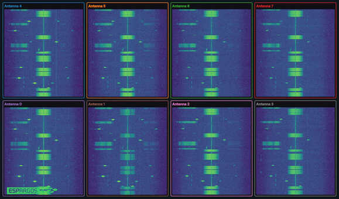
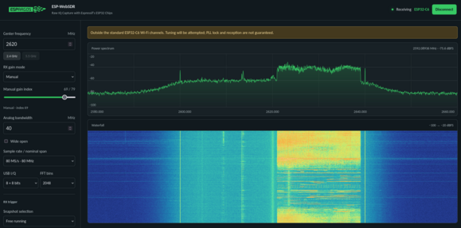

We have some very exciting news to share on something that we have been working on "behind the scenes" for a couple of months now: With the latest firmware version, ESPARGOS One is now capable of capturing raw I/Q samples, effectively turning it into a phase-coherent 8-channel Software Defined Radio (with low duty cycle).
This makes it possible to not only receive and localize Wi-Fi signals, but also Bluetooth / Bluetooth Low Energy, Zigbee and any other wireless signals transmitted in the 2.4 GHz ISM band frequency range (and even slightly beyond).

What makes this possible: We figured out that Espressif left undocumented debug functionality in their chips, presumably intended for internal modem testing. We found this functionality and we are now using it to get direct access to baseband IQ samples.
Surprisingly, this functionality has been around for quite a while now. Not only do the ESP32-C61 chips in ESPARGOS One have it, but also older members of the ESP32 family all the way back to the "original" ESP32.

ESP32-C6 Capturing an LTE Signal at a center frequency of 2.63 GHz
You don't need an ESPARGOS One antenna array to see this for yourself, a supported ESP32 chip and a modern web browser with builtin WebSerial will do. By flashing the ESP-SDR firmware on your ESP32, you can turn it into an incredibly cheap (but also low-duty-cycle) software defined radio.

Demand remains high, and production is only now ramping up again after the summer break. We expect availability to improve in early October. Submit a quote request to join the queue. We send your quote and request payment only when your hardware is ready to ship. No advance payment is required to reserve your place!
For various regulatory reasons, we are still limited to EU-only B2B sales for the time being, but are still working on expanding this. Future updates will cover availability in other countries and for private consumers.